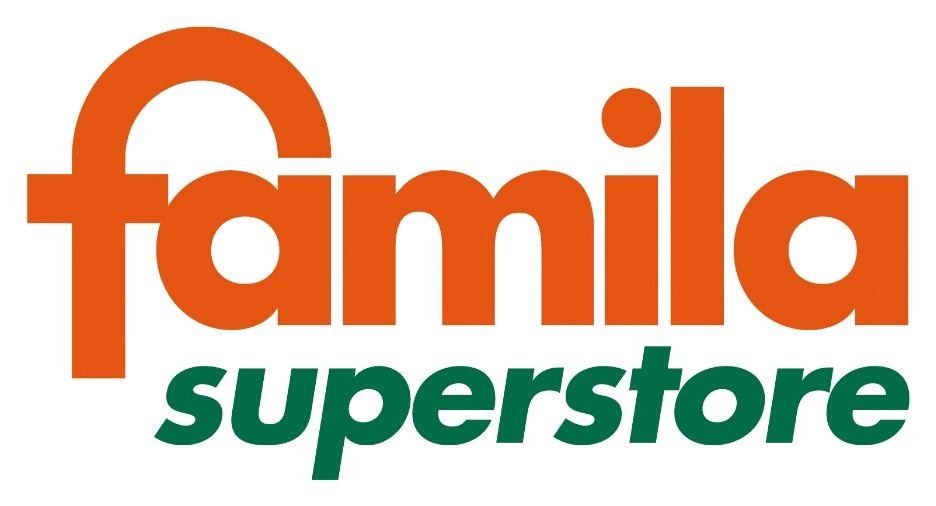
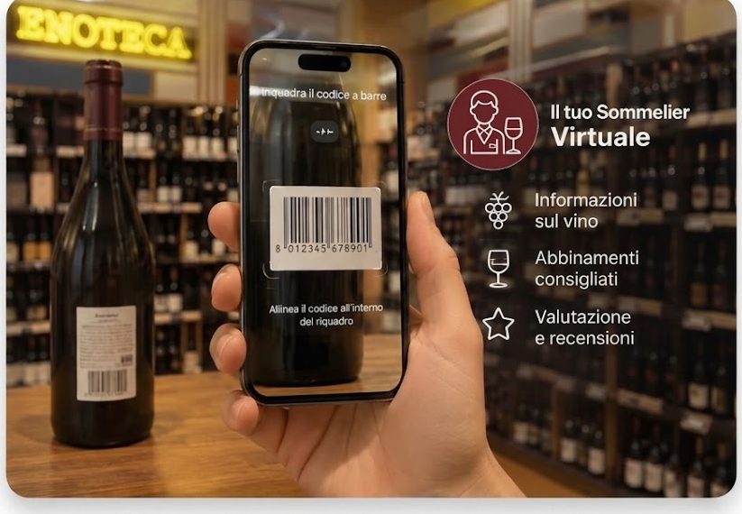

IL TUO ASSISTENTE VINI
Il Sommelier Virtuale
Scopri il vino giusto per ogni occasione
Scansiona il codice a barre oppure fotografa la bottiglia. In pochi secondi ottieni le informazioni più utili per conoscerla, servirla e abbinarla.

oppure
PROFILOCaratteristiche e stile
ABBINAMENTII piatti più adatti
VALORECosa contribuisce al suo posizionamento